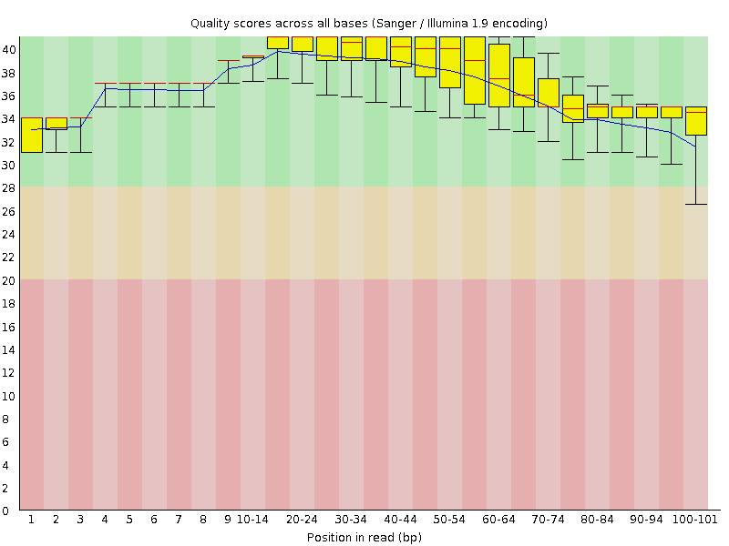
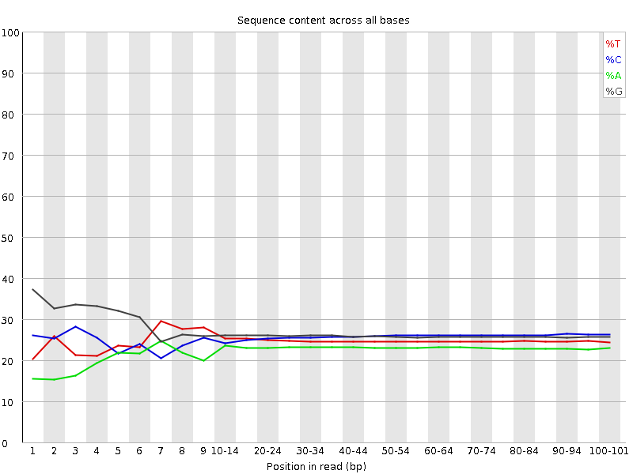
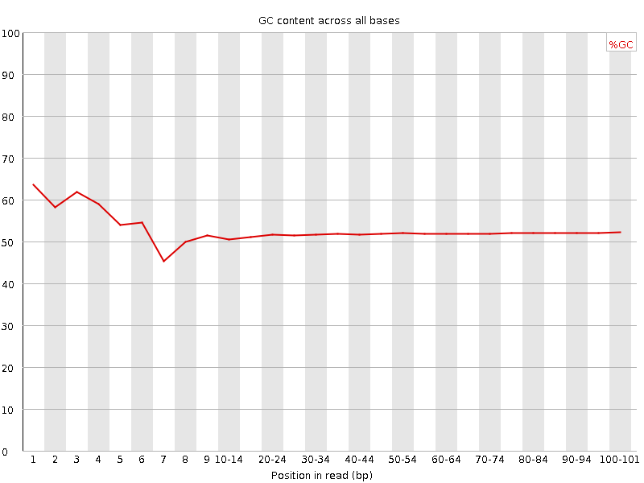
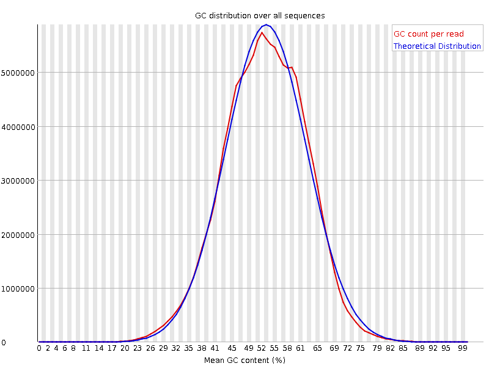
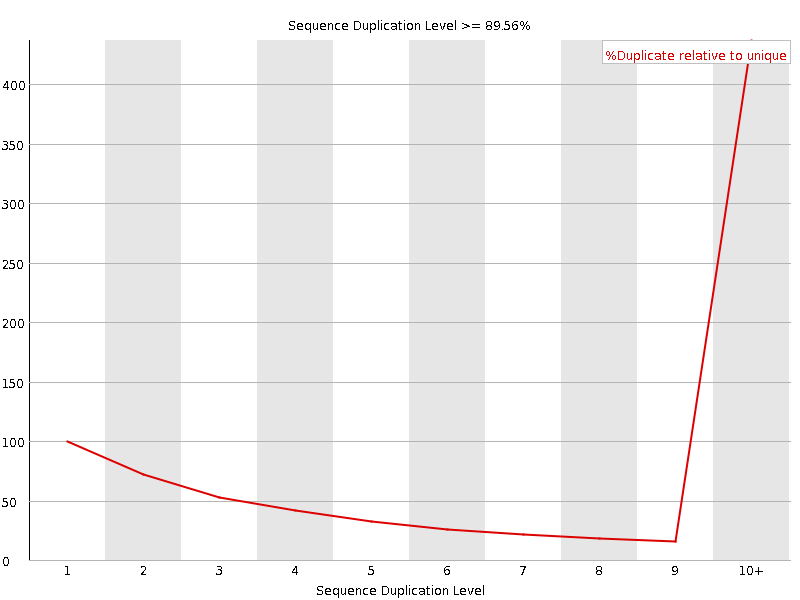
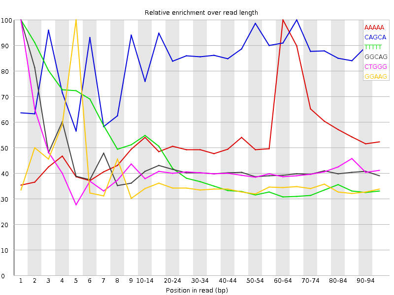

![[OK]](Icons/tick.png) Basic Statistics
Basic Statistics
| Measure | Value |
|---|---|
| Filename | SRR534309_1.fastq |
| File type | Conventional base calls |
| Encoding | Sanger / Illumina 1.9 |
| Total Sequences | 140362367 |
| Filtered Sequences | 0 |
| Sequence length | 101 |
| %GC | 52 |
Per base sequence quality

Per sequence quality scores

![[WARN]](Icons/warning.png) Per base sequence content
Per base sequence content

![[FAIL]](Icons/error.png) Per base GC content
Per base GC content

Per sequence GC content

Per base N content

Sequence Length Distribution

Sequence Duplication Levels

Overrepresented sequences
| Sequence | Count | Percentage | Possible Source |
|---|---|---|---|
| GATCGGAAGAGCGGTTCAGCAGGAATGCCGAGACCGATCTCGTATGCCGT | 292877 | 0.2086577807568606 | Illumina Paired End PCR Primer 2 (100% over 50bp) |
Kmer Content

| Sequence | Count | Obs/Exp Overall | Obs/Exp Max | Max Obs/Exp Position |
|---|---|---|---|---|
| AAAAA | 27346205 | 3.1779704 | 5.672057 | 60-64 |
| CAGCA | 39959375 | 3.1660655 | 3.6343403 | 65-69 |
| TTTTT | 33094220 | 2.5763257 | 6.524073 | 1 |
| GGCAG | 32412855 | 2.1849334 | 5.254692 | 1 |
| CTGGG | 33060225 | 2.0569603 | 5.0118628 | 1 |
| GGAAG | 25430260 | 1.9345337 | 5.491253 | 5 |
| GAAGA | 20962355 | 1.836572 | 5.3901515 | 6 |
| GGGGG | 27005855 | 1.5488113 | 6.3490205 | 1 |
| GGGGA | 22603530 | 1.4929984 | 5.8405995 | 1 |
| GTGGG | 21969945 | 1.3394027 | 6.4729314 | 1 |
| GGGGT | 20354060 | 1.2408899 | 5.2649355 | 3 |
| CGGGG | 15924470 | 0.93205905 | 5.784802 | 1 |